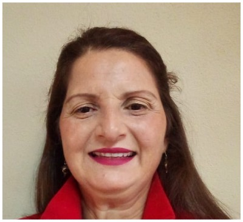

María J. Escalante
Secretaría & Asistente Administrativa
Acerca de mí
Hola! Soy María Escalante A. Soy muy apasionada por la administración y el orden. Soy una persona puntual y reponsable que le gusta ayudar y trabajar en equipo.
Edad
54
Email
maria@company.com
Tel
+506-8789-7767
Domicilio
San José, Vázquez de Coronado, C.R.
Habilidades
Microsoft Office
Asistencia administrativa
Uso de internet
Español
Inglés
Francés
Experiencia Laboral
Sección de Cuentas Corrientes Requisito de Graduación, Colegio Técnico en Secretariado en el Banco Nacional
May, 1984 - 1985
Agregar Tarea
Secretaria de Fiscalía en Colegio de Licenciados y Profesores
June, 1985 - May, 1986
Agregar Tarea
Cruz Roja Costarricense. Sede Central en San José
Jan, 1986 - May, 1989
2 año en Depto. Proveeduría, 1 año en Contabilidad
1 año de patrocinio Intercambio Cultural Costa Rica-Canadá
Cruz Roja Costarricense. Sede Central en San José
Jan, 1986 - May, 1989
2 año en Depto. Proveeduría, 1 año en Contabilidad
1 año de patrocinio Intercambio Cultural Costa Rica-Canadá
Cruz Roja Costarricense. Sede Central en San José
Jan, 1986 - May, 1989
2 año en Depto. Proveeduría, 1 año en Contabilidad
1 año de patrocinio Intercambio Cultural Costa Rica-Canadá
Cruz Roja Costarricense. Sede Central en San José
Jan, 1986 - May, 1989
2 año en Depto. Proveeduría, 1 año en Contabilidad
1 año de patrocinio Intercambio Cultural Costa Rica-Canadá
Educación
Bachiller/ Técnico en Secretariado Comercial de COTEPECOS Sabana Sur
2011 - 2013
Colegio Técnico Profesional de Educación Comercial y de Servicios (COTEPECOS) Sabana Sur.
MT-2 Calificada de la Universidad Estata a Distancia
2007 - 2011
MT-2 Calificada por la Universidad Estatal a Distancia en
Profesorado en Educación con Énfasis en Ciencias Naturales
MT-2 Calificada de la Universidad Estata a Distancia
2007 - 2011
MT-2 Calificada por la Universidad Estatal a Distancia en
Profesorado en Educación con Énfasis en Ciencias Naturales
MT-2 Calificada de la Universidad Estata a Distancia
2007 - 2011
MT-2 Calificada por la Universidad Estatal a Distancia en
Profesorado en Educación con Énfasis en Ciencias Naturales
Intercambio Costa Rica-Canadá, 1 año de Cruz Roja Costarricense
1995 - 2007
User generated content in real-time will have multiple touchpoints for offshoring. Organically grow the holistic world view of disruptive inovation via workplace diversity and empowerment.